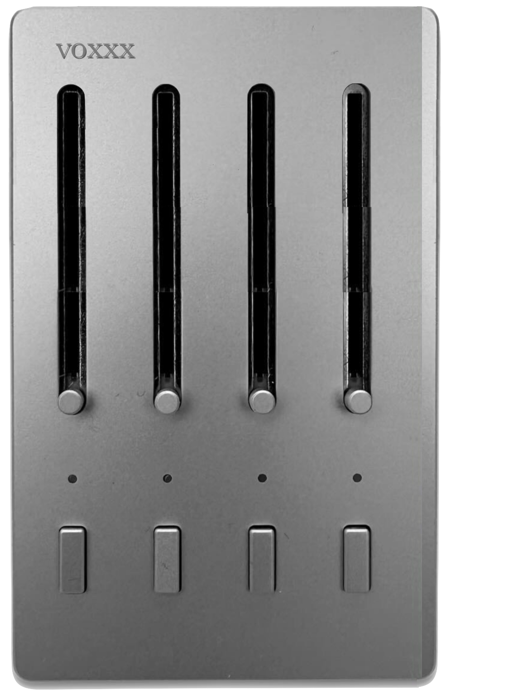

narcisium
muzik | elektronik | arts
stemmm
A 4-channel real-time stem separator that allows you to isolate different audio components such as vocals, instruments, and effects with precision.

voxxx
A sleek audio fader designed for seamless mixing and dynamic sound control, perfect for studio or live performance settings.